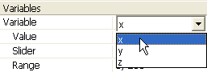

LaserCanvas 5 > Tutorials > Collimating Telescope >
Part 2. Apply Variables
< Prev | Next >
We introduce two variable lengths: The space x between the lenses, and the space y from the laser source to the first lens.
If necessary, click the Variables group heading in the Property Manager to expand the Variables group.- 
Select variable x from the Variable popup menu.
Enter value 300 into the variable Value field.- Select variable y from the Variable popup menu.
Enter value 250 into the variable Value field.- On the Canvas, select the first (diverging) lens.
In the Distance to Next field in the Property Manager, type "x". (Don’t type the quotes.) When you press enter, the Distance to Next value will be displayed as 300, since this is the current value of x.- On the Canvas, select the Source element.
- Set the Distance to Next item to "y".
- Save the system by selecting menu File | Save or clicking the
 Save button on the toolbar.
Save button on the toolbar.
The system should now look similar to the illustration. If it is too long to fit into the window,
- Select the Zoom tool from menu Canvas | Zoom or the Zoom Tool button on the toolbar.
- Click the Canvas while holding down the Shift key to zoom out.
- Or, drag in the canvas while holding down the Control and Shift keys.
< Prev | Next >